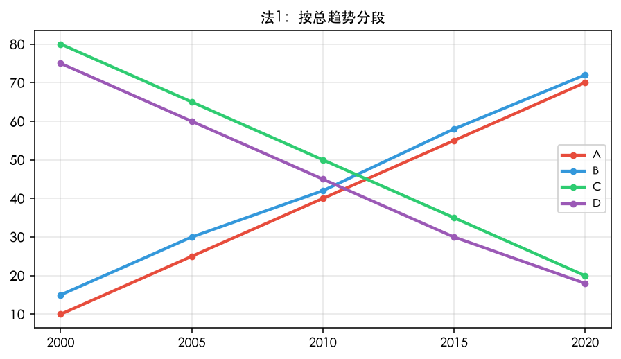
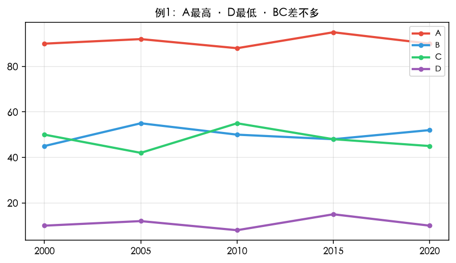
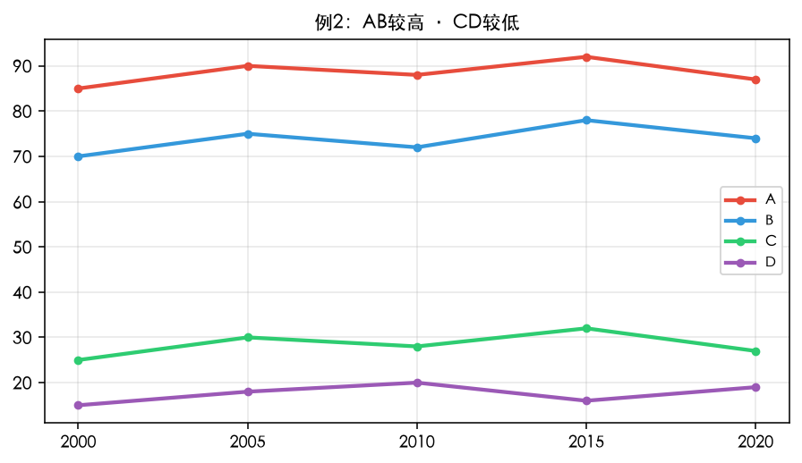

解题三步 · 第二步
主体分段
两种分段法任选其一；若无最高 & 最低，则按较高 & 较低。
批注： 选哪个都行
法 1 — 按总趋势（只看起终点）

法1：按总趋势分段（A/B 升 · C/D 降）
- AB — 一段（升）
- CD — 一段（降）
法 2 — 按区间
- 一段： 最高 & 最低
- 一段： 差不多的
批注： 若无最高 & 低，则按较高 & 较低（例见下）
分段示例（法 2）· 例 1

例1：A 最高 · D 最低 · BC 差不多（40~60 波动）
- 段 1： A 最高（一直），D 最低（一直）
- 段 2： B、C 差不多（即使有波动）
分段示例（法 2）· 例 2

例2：AB 较高（60~100）· CD 较低（0~40）
- 段 1： AB 差不多（较高）
- 段 2： CD 差不多（较低）